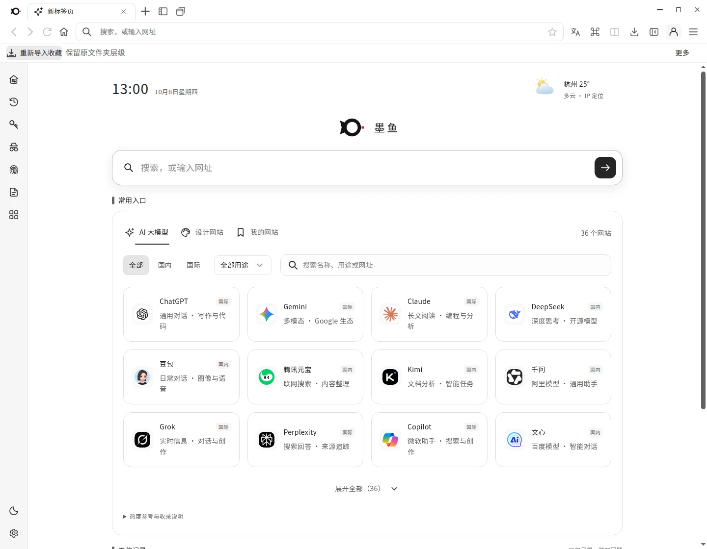

THE NEXT WAY TO BROWSE / 2026
打开未来，从容浏览。
快一点发现，少一点打扰。把 AI 灵感、设计资源和高效工具，放进每天打开的那一页。
WINDOWS 10 / 11 64 BIT V8.32.0

LIVE PRODUCT / 8.32.0真实界面
36AI
PLATFORMS
PLATFORMS
17 项实用工具
001 / MOYU BROWSER向下探索
01 / INTELLIGENCE IN MOTION
灵感不设限。
智能，自由生长。
常用 AI 平台不再散落各处。分类导航与快捷筛选，让想法被看见，让下一步更自然。
AI 网址导航 / 集中探索
AI
SELECTED / PLATFORMChatGPT常用对话与写作助手，打开新的思路。
02 / THE CREATIVE TOOLKIT
功能无需繁复。
恰好够强大。
画布与印刷尺寸、取色、长网页截图、翻译、日报周报……小工具有大用处，随手就能调用。
17项内置实用工具
MOYU TOOLS / ACTIVE画布尺寸
尺寸、单位、DPI 与出血设置，一站式完成。
01 / 0503 / FLOW STATE
专注当下。
把秩序交给墨鱼。
整理书签、切换标签、记录工作、管理账号。你不需要记住每一步，让需要的功能刚好出现。
MOYU / WORKSPACE⋯
工作空间 / 模拟预览
井然有序，从每一页开始。
分类保存书签与标签，轻松找到常用资料。
项目资料灵感收集常用网站
ORGANIZED, AT LAST.
04 / IT FEELS LIKE YOURS
不止一种风格。
更像你的选择。
黑白极简、清新蓝、深色主题。字号、布局和首页模块，都可以顺着你的使用习惯调整。
点击体验主题切换 / 本页为界面交互示意MOYU / NEW TAB···
☀ 23°
MOYU.
搜索，或输入网址
AIDESIGNTOOLS
MONO / 01MAKE IT YOURS
05 / YOUR NEXT CHAPTER
下一页，
交给墨鱼。
墨鱼浏览器 8.32.0 · Windows 10 / 11 · 64 位。轻松开始，保持专注。
前往下载中心 WINDOWS · VERSION 8.32.0